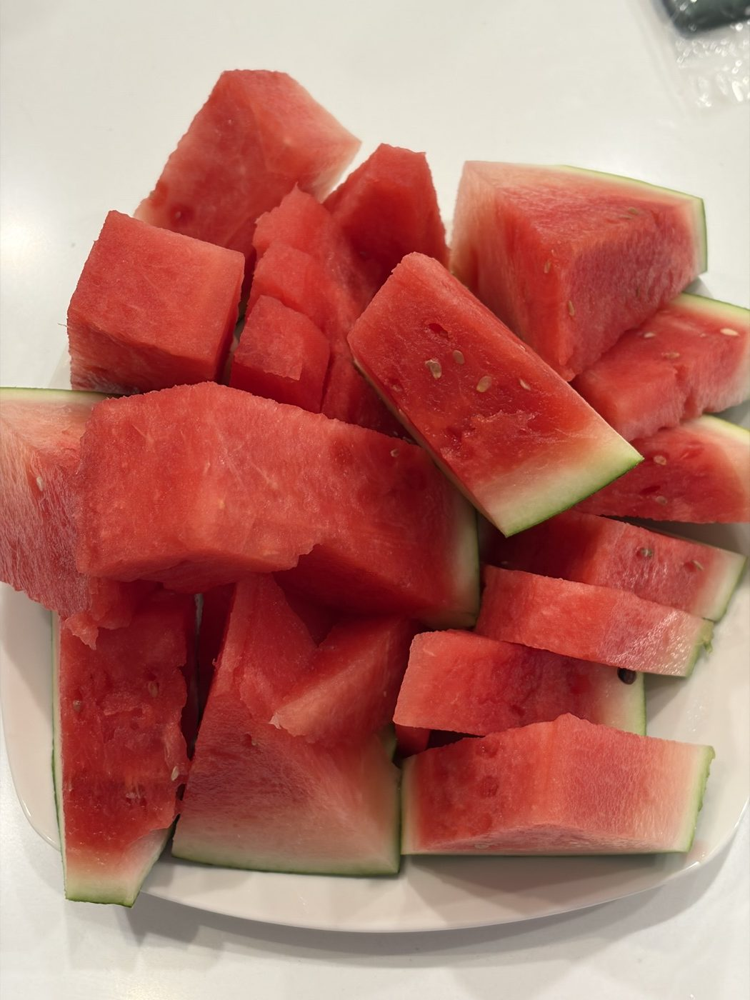
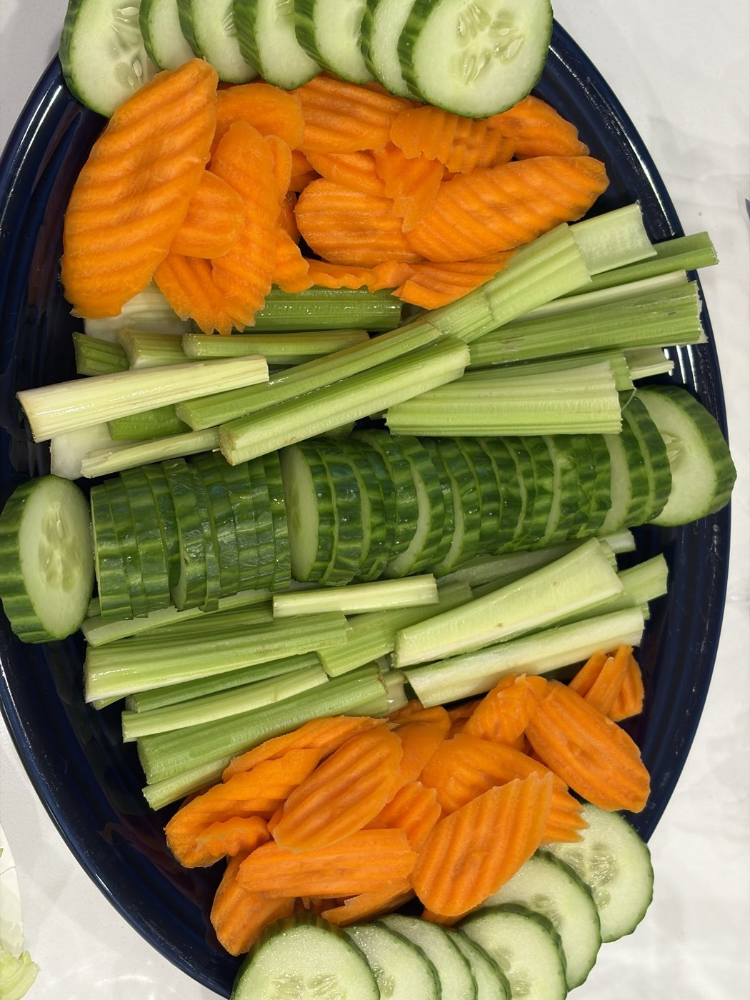

Every Brain Organizes a Little Differently — and So Does Your Child's
By Leslie Dykstra · Certified Early Childhood Specialist · Williamson County, TN


What does your brain think about when you look at these two pictures? Do you notice the watermelon placement is pretty… abstract? Do you like how the vegetable board is symmetrical — and did you spot how the cucumbers are lined up in a perfect little row? Which platter do you like best? And more importantly — why?
There's no wrong answer. But your answer says something wonderful about how your brain likes to organize the world.
The board game test
Here's another one. When you play Ticket to Ride, how do you organize your train cars? Do you place them all in tidy, equal lines? Do you arrange them into a little collage? Do you stack them up as high as they'll go — or do you leave them in a happy, messy pile right where they landed when they came out of the bag?
And when you play Uno with kids, do you find yourself itching to straighten the discard pile so every card aligns perfectly? Or do you honestly not even notice that the pile is curved and crooked?
I promise I'm not just asking about snacks and board games. These little moments are tiny windows into something big.
All of our brains think a little differently — and that's beautiful
All of our brains think a little differently, and that is exactly what makes each of us beautifully unique! Just like we prefer some things a certain way — the cucumbers lined up, or the watermelon free-form — so do children.
When children are in a learning environment, it's our job as teachers and educators to figure out what they like and find ways to get them excited about learning. Does your child like to line up all the blocks first, and then sort them by color? That's not a quirk to rush past — that's information! Lining up, sorting, and grouping are the roots of early math thinking, and a child's natural style tells us exactly how to meet them where they are. It's also one of the reasons learning through play works so well — play is where children show us how their minds work.
How child assessments celebrate the way your child thinks
Here at Little Minds, Big Futures, we offer child assessments to discover what your child already knows and to set clear, encouraging goals for what they'll learn next. But here's the part I love most: during every assessment, your child sets the tone.
- They choose what we go over next. Their curiosity leads the way.
- They set the pace. We move as quickly or as gently as they need — no rushing, no pressure.
- They even pick the sticker. (This is a very serious decision, and I respect it.)
Our goal is to empower students and help them feel so confident that they believe they can conquer the world when it comes to learning — because they can. An assessment isn't a test to pass or fail. It's a chance for your child to show off what they know, in the way their one-of-a-kind brain likes to show it.
If you're curious what that looks like for your little one, you can read about how our programs start with an assessment and personalized plan, or just reach out for a free 15-minute conversation.
Frequently asked questions
What happens during a child assessment at Little Minds, Big Futures?
Your child sets the tone. They help choose what we look at next, the pace we move, and yes — which sticker they want. While we play and explore together, I'm gently discovering what your child already knows so we can set clear, encouraging goals for what comes next. It feels like play to them, and it gives us a real roadmap.
My child likes to line things up before playing. Is that something to worry about?
A love of order is simply one of the many ways brains enjoy the world — just like some adults straighten the Uno pile and some never notice it. Lining up, sorting, and classifying are actually early math thinking at work. As always, if you ever have questions about your child's development, your pediatrician is a wonderful partner — but a preference for tidy rows is a window into how your child thinks, not a red flag on its own.
Why does it matter how my child organizes and sorts things?
Because it shows us how they think! Sorting by color, lining up by size, and grouping favorites are the roots of comparing, classifying, and pattern-making — foundational math skills. When a teacher notices how a child naturally organizes their world, we can use those preferences to make learning feel exciting instead of like a chore.
Want to see how your child's beautiful brain learns best?
Book a free 15-minute consultation with Leslie and ask about a child assessment. Little Minds, Big Futures — where every child's potential takes flight.